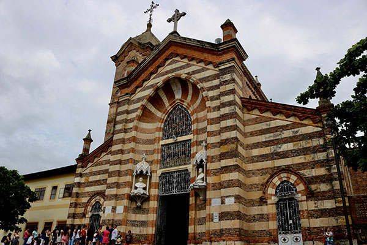
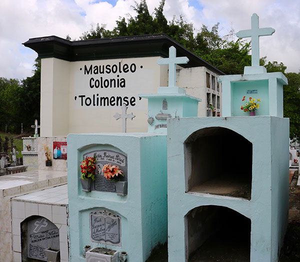

Retroceder el tiempo y posicionarnos en 1961, un año histórico para el municipio de Agua de Dios, Cundinamarca, es a simple vista la semejanza de cualquier otro cuando se tiene la descripción de un pueblo que, al reservarse en el imaginario de cada uno, se viste de casas de barro o modernas por el progreso social, de calles y caminos pavimentados y de iglesias y lugares turísticos poco conocidos. Pero esta ciudad, a diferencia de otras, guarda un tesoro poco mencionado como lo es la historia de miles de pacientes de Hansen (lepra) que fueron aislados allí.
Parroquia Nuestra Señora del Carmen, Agua de Dios.
En la que luego de recorrer más de 115 km desde la ciudad de Bogotá, se llega por la vía principal de Girardot o La Mesa para aterrizar luego de cuatro horas, al municipio de Agua de Dios de manera tranquila junto a un ambiente caluroso que no baja los 25 grados centígrados. Pero para su momento, Agua de Dios fue uno de los tres lazaretos construidos en Colombia y posteriormente, uno de los lugares más importantes en la historia del país. Ya que fue la tierra que se prestó para dar inicio a uno de los primeros desplazamientos forzados que ocurrió en la historia de Colombia, cuando el desconocimiento científico por la enfermedad, condenó la vida de personas que portaban la dolencia de la deformación. Una enfermedad denominada Hansen o lepra, que fue durante décadas, vista como la maldición que alteró el orden social del país y que, por miedo al contagio, reclutó a más de 5.000 enfermos durante casi un siglo (1887 – 1961).
Un número alto de pacientes de Hansen que, luego de recorrer sus principales calles, se conoció la vida de pacientes que alcanzaron a experimentar el destierro y la persecusión de la enfermedad maquillada en el cuerpo del inocente. Como es el caso de Ramón Guerrero, el hombre que al no delatar su edad, recuerda aquella sensación y experiencia de llevar sobre su piel la marca que lo condenó de la libertad. Su llegada al inhóspito lugar en tiempos desconocidos, se basó en la realización de toda una documentación que como protocolo, le abrió las puertas a la soledad, el abandono y la violación de derechos humanos tras mencionar que “había un señor supremamente agravado que nos acompañaba a hacer papeleos. Estando enfermo, llagado, me ponía las manos sobre el hombro. ¡Imagínese! Eso fue duro. Una de las cosas más duras que me haya ocurrido en la vida, fue esa la llegada aquí”, recapitula.
Cementerio Central, Agua de Dios.
Un testimonio agridulce que, si se adentra a los albergues, se encuentra a puerta cerrada la multiculturalidad de personas pacientes de Hansen provenientes de diferentes regiones del país. Pero no son los únicos, ya que en el espacio público del municipio y en los diferentes mausoleos del cementerio Central se escucha y se observa las distintas personalidades que hacen de Agua de Dios una tierra diversa.